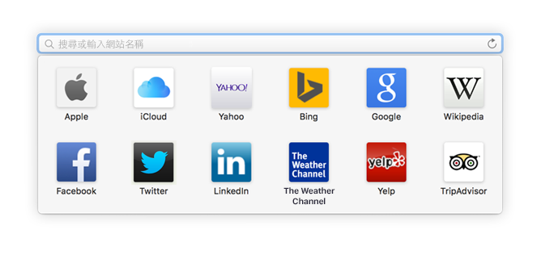
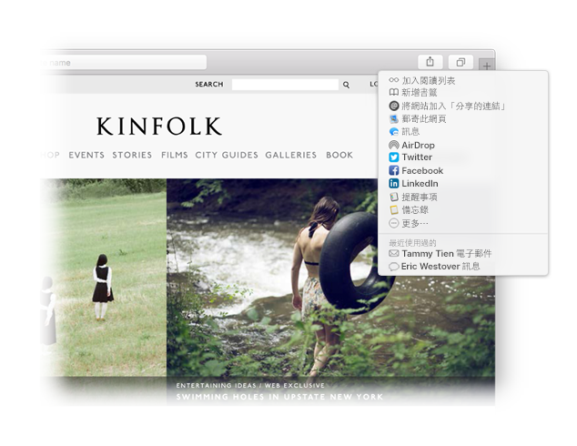
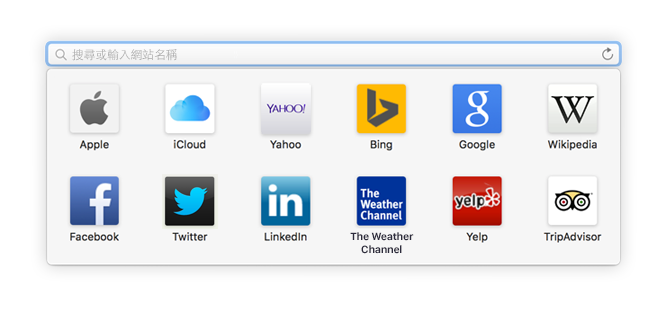
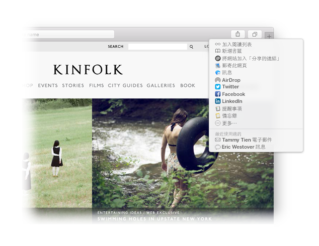

尋找喜好項目。
按一下「智慧型搜尋」欄位來連接您最喜愛的網站。按一下網站立即前往。

釘選網站。
向左拖移標籤來釘選網站，該網站便會保持釘選在標籤列。

分享連結。
按一下  以電子郵件或訊息方式來傳送連結、在 Facebook 或 Twitter 上分享，或加入「備忘錄」。
以電子郵件或訊息方式來傳送連結、在 Facebook 或 Twitter 上分享，或加入「備忘錄」。
歡迎使用 Safari。
最聰明的上網方式。

尋找喜好項目。
按一下「智慧型搜尋」欄位來連接您最喜愛的網站。按一下網站立即前往。
釘選網站。
向左拖移標籤來釘選網站，該網站便會保持釘選在標籤列。

分享連結。
按一下  以電子郵件或訊息方式來傳送連結、在 Facebook 或 Twitter 上分享，或加入「備忘錄」。
以電子郵件或訊息方式來傳送連結、在 Facebook 或 Twitter 上分享，或加入「備忘錄」。